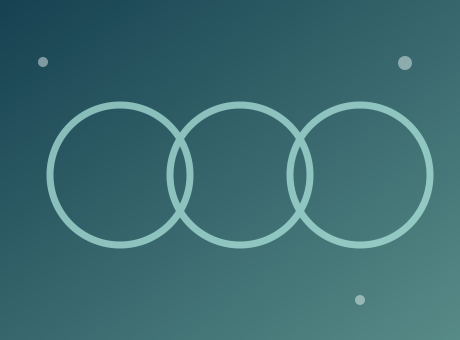
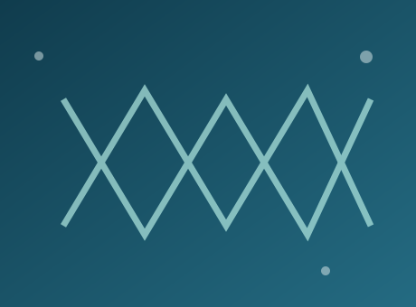

Beyond the bench
Lab Activities
A space for team photos, workshops, seminars, conferences, and celebrations — reflecting the people behind the research.
Our moments
Lab life, in pictures.
The graphics below are original placeholder illustrations, not actual event photos. Replace them with your own images.
Team photoReplace with a real group photograph and date.
Conference / seminarAdd a conference or academic meeting photo.
Lab gatheringShare a team activity or celebration.Outreach / workshopHighlight workshops, teaching, or outreach events. Photo tip: compress each image to approximately 150–400 KB when possible for faster page loading.